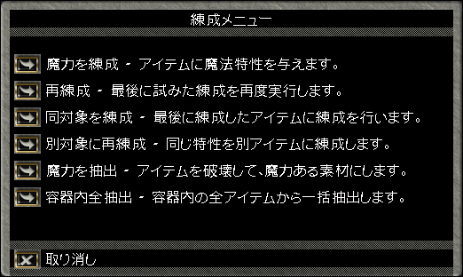
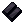
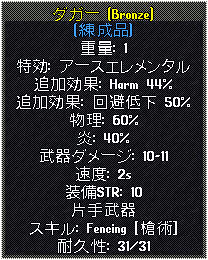

Imbuing（練成）スキル ： 抽出
Imbuing（練成）スキルについて、現時点での仕様をまとめています。スキルの基本の柱は、Unravel（抽出）とImbuing（練成）です。
このスキルには、生産道具は必要ありません。
Imbuing（練成）スキルに関わる用語
- 強度率 ： 装備品に付加された、あるマジック効果の強度を0〜100％で表わしたもの
- 総強度率 ： 装備品に付加された、全てのマジック効果の強度率を合算したも。
- 抽出評価値 ： 総強度率に、種族、ソウルフォージなどの補正（加減掛算）を行った後の値。抽出される魔法素材の判定基準となる
- 練成成功率基本値 ： 練成後の総強度率と練成スキルで決まる成功率
- 練成成功率 ： 練成メニューに表示されている成功率。ソウルフォージ、種族、品質による補正を含む（＝成功確率）
- 不安定係数 ： あるマジック効果の強度率に掛けられる数値。1.0〜1.5の範囲（＝補正率）
- 不安定度 ： マジック強度率に不安定係数を掛けたものを合計した数値。装備品の質により上限が設定されており、それを超える練成は行えない
１．Unravel（抽出）
（１）概要
抽出は、マジックアイテムから魔法素材（Magical Ingredient）を取り出すことをいいます。
この作業を行うにはマジックアイテムとSoul Forgeが必要で、魔法素材が抽出されたマジックアイテムは消滅します。
模式図としては下のような感じです。
+ →
→ //
//
（２）抽出の方法
Imbuingスキルを使用すると、下のようなメニューが出現するので、"魔力を抽出"または"容器内全抽出"を選択します。

つづいて、抽出したいアイテム（"容器内全抽出"を選択した場合、アイテムの入っているバッグ）を選択します。抽出できるアイテムは武器、防具、盾、アクセサリに限られています。
なお、抽出したい装備品がArtifactに相当するものあるいは特殊素材製の場合、下の確認画面が出現します。
抽出評価値に従い、下に示す3種類の魔法素材のどれかが入手できます（抽出評価値の計算方法は（５）で説明）。
なお、enchanted essence[魔力化エキス]とrelic fragment[レリックの破片]を抽出するためには、一定以上のImbuingスキルが必要です。
スキルが十分でない場合、"このアイテムの魔力を抽出するにはスキルが足りません。"と表示され、
魔法素材を入手することはできません（アイテムも失われない）。
Imbuingスキルと抽出できる魔法素材
Publish63以降、Gargoyleは種族特性（Master Artisan）により、抽出に必要なImbuingスキルが他の種族と比べて5.0だけ低くなります。
不具合 ： 現在、上記の仕様が全ての種族に対し適用されています。
| Unravel |
抽出評価値
＜200％ |
抽出評価値
＜451％ |
抽出評価値
≧451％ |
Imbuing
≦50.0 |
Magical Residue |
抽出できない |
抽出できない |
Imbuing
≦95.0 |
Magical Residue |
Enchanted Essence |
抽出できない |
Imbuing
＞95.1 |
Magical Residue |
Enchanted Essence |
Relic Fragments |
抽出される魔法素材の数量
抽出評価値計算表 Publish63対応版
（武器・防具
・盾・アクセサリ）
特別な装備品から抽出できる魔法素材一覧
| 抽出評価値 |
Pub62.3 |
Pub63 |
| 1〜50未満 |
×1 |
×1 |
| 50〜100未満 |
×1〜3 |
×2〜3 |
| 100〜150未満 |
×3〜4 |
| 150〜200未満 |
×4〜5 |
| 200〜300未満 |
×1〜2 |
×1〜2 |
| 300〜400未満 |
×2〜3 |
| 400〜450 |
×3〜4 |
| 451〜 |
×1 |
×1〜2 |
評価値50以上で、（標準の数値）と（標準の数値+1）の割合はおおよそ下のようになっており、上位の素材では（標準の数値+1）が出にくくなっています。
- Magical Residue --- 1：1
- Enchanted Essence --- 2：1
- Relic Fragment --- 3：1
（４）アイテム鑑定（item identification）スキル
アイテム鑑定スキルを使いマジックアイテムを鑑定すると、抽出したときに得られる魔法素材の種類も確認できます。
このとき、鑑定者の種族補正が考慮され、さらに補正のある施設（ソウルフォージ）の有効範囲にいる場合、それも考慮されたものとなります。
ただし、魔法素材を抽出できるだけのImbuingスキルが必要となります。
現在、鑑定時の判定と抽出時の判定で整合が取れていません。
（５）抽出評価値の計算
抽出評価値は以下の要素を考慮して算出されます。
Publish73以降に導入されている新マジックシステムでは、６）耐久値の補正が従来のマジックシステムと異なっています。
Publish74では、アイテムのランクが抽出評価に影響を与えなくなりました。
１）マジックおよび特殊素材プロパティの強度率
装備品に付加されたマジックおよび特殊素材プロパティの強度は、プロパティ毎に0〜100％（100％を超える場合もある）で表わされます。
それらを合計し、装備品のマジック総強度率が算出されます。
下のマジック武器を例にプロパティの強度率を計算します。なお、レシピ品の特別な効果もマジック効果として強度率に反映されます。
さらに、品質効果がマジックプロパティまたは素材効果と合算されている場合、それらを合計して強度率を計算します。
ただし、強度率の合計が0％以下の場合、２）以降の補正は無効となり、抽出できませんので注意してください。
不具合 ： 片手使用可（旧バランスド）はプロパティの強度率が0％となっています。
- Lightning 48％ --- 強度率96％
- 武器ダメージ 40％ --- 強度率80％（品質効果のみの場合、強度率に加算されない）
- 速度 25％ --- 強度率83％
- ライフリーチ 33％ --- 強度率88％
強度 ： {33 / [2.00 / (1 + 0.25)]} = 22 { }は端数切上、[ ]は0.25単位で切捨
強度率 ： 100 * 22 / 25 = 88%
- 総強度率 --- 347％

２）特殊素材の補正
装備品に特殊素材が使用されている場合、素材の種類に応じて１）の総強度率に掛け算の補正が行われます。
Granite[花崗岩]は、ingotの補正と同じです。
鑑定時の判定は加算の補正（shadowでは+3％など）となっており、鑑定と抽出で整合が取れていない状態です。
| 素材 |
補正
(×N) |

dullcopper |
1.02 |

shadow |
1.03 |

copper |
1.04 |

bronze |
1.05 |

gold |
1.07 |

agapiter |
1.09 |

verite |
1.12 |

valorite |
1.20 |
| 素材 |
補正
(×N) |

spined |
1.01 |

horned |
1.02 |

barbed |
1.04 |
| 素材 |
補正
(×N) |

oak |
1.01 |

ash |
1.03 |

yew |
1.07 |

heartwood |
1.10 |

bloodwood |
1.15 |

frostwood |
1.20 |
３）種族の補正
抽出者がガーゴイルの場合、２）までで算出されたマジックの総強度率に20％が加算されます。
４）施設（ソウルフォージ）の補正
抽出に使用するソウルフォージには、マジックの総強度率に一定値加算させるものがあります。
女王のソウルフォージを使用するためには忠誠度が必要ですが、抽出および変成の際には、この制限が適用されません。。
- Royal Cityのソウルフォージ（Royal City銀行西にある） ： +10％
- 女王のソウルフォージ（Royal City北の宮殿内にある） ： +30％
- 上記以外のソウルフォージ ： +0％
５）練成品の補正
５）以降の補正は１）〜４）の合計値に対して行われます。
装備品が練成品の場合、マジックの総強度率を30％低減します。
なお、Stygian Abyss導入時は5％低減、Publish62〜63では20％低減でした。
６）耐久値の補正
装備品の耐久値が50を下回っている場合、1ごとに総強度率を2％ずつ低減します。
新マジックシステムでは、耐久値が25を下回っている場合、1ごとに総強度率を4％ずつ低減します。
７）抽出評価値の計算
１）〜６）より、魔法素材抽出の判定に使われる抽出評価値が算出されます。
例題として、下のマジック武器のプロパティを使い、抽出評価値を計算します。
抽出者はガーゴイル、ソウルフォージはRoyal Cityにあるものを使用します。
Publish64の仕様
- マジック総強度率 ： 288％
- 素材補正 ： ×1.05
- 種族補正 ： +20％
- 施設補正 ： +10％
- 練成品補正 ： -30％
- 耐久値補正 ： -38％
- 抽出評価値 ： （288 * 1.05 + 20 + 10）× （1.00 - 0.30 - 0.38）＝ 106％
Magical Residue [魔法の残骸]が3〜4個抽出される。

１’．Unravel（抽出）細目
アイテムから魔法素材を抽出するときの応用知識を紹介します。
（１）戦利品で入手できた弓および投擲系武器の抽出評価値
弓および投擲武器に付加される命中＋、回避＋、幸運、物理以外の属性抵抗値のマジック強度率は、
戦利品かそうでないかで上限値が異なるため、表示値が同じでも強度率は同じになりません。
なお、戦利品に上記のプロパティを練成しない限り、マジック強度率の計算は戦利品に準じたものとなります。
- 戦利品の場合 ： 命中および回避は1〜15％、幸運は1〜100、抵抗値は1〜15％
- 作成または練成の場合 ： 命中および回避は1〜25％、幸運は1〜120、抵抗値は1〜18％
（２）Juka lord産のBowの調整
Juka Lordの戦利品に入っているBow[弓]は、gear[歯車]を使うことで特効効果が追加されますが、
その効果もマジックの強度率100％として反映されます。
（３）Bloodwoodのライフリーチ
木製武器をBloodwoodで強化したとき、もともとのライフリーチの有無により以下のような処理が行われますが、
どの場合でもライフリーチの強度率が32％として計算されます。
高強度のライフリーチが付加された武器をBloodwoodで強化するのは得ではありません。
- ライフリーチがすでに付加されている場合・・・ライフリーチの表示値は変わらない。
- ライフリーチが付加されていない場合・・・ライフリーチ強度8が追加される。
（４）武器の品質効果
武器の品質効果として付加される武器ダメージ＋は、単体ではマジックの強度率に反映されませんが、
レシピおよび特殊素材で付加される武器ダメージ＋と合算した場合、まとめてマジックの強度率に反映されるようになります。
（５）特殊素材の効果
Publish63以降、特殊素材の効果で付加されたプロパティもマジックの強度率として反映されるようになります。
（６）6プロパティ以上での補正
レシピや特殊素材の効果により、強度率を計算するマジック効果が6つ以上となった場合、以下のような補正が行われます。
マジックの強度率を単純に合計したものより確実に小さくなります。
- 全てのマジック効果の強度率を合算する。
- 1. で算出した総強度率をプロパティ数（6以上）で除算し、端数は切り捨てる。
- 2. で算出した数値に5を掛ける。
- 3. で算出した数値に、特殊素材、種族、施設、練成品および耐久値補正を行う。
- 4. で算出された数値が抽出評価値となり、どの魔法素材が抽出されるか決定される。
例）Gardian Axe [ガーディアンアックス]
Iron製, 耐久値50以上, Gargoyle, ロイヤルシティのソウルフォージで抽出
プロパティ ： 表示値 (強度率)
魔道武器 ： -21 (90%)
特効効果 ： スネーク (100%)
ヒットポイント ： +4 (80%)
ヒットポイント回復 ： 1 (50%)
命中 ： +14% (93%)
武器ダメージ ： +46% (92%)
抽出評価値算出
全てのマジック効果の強度率をプロパティ数で除算 ： (90+100+80+50+93+92)/6 = 84
上記に5を掛ける ： 84 * 5 = 420
種族、施設の補正を加算する ： 420 + 20 + 10 = 450
抽出評価値が450%なので、魔力化エキスが抽出される。